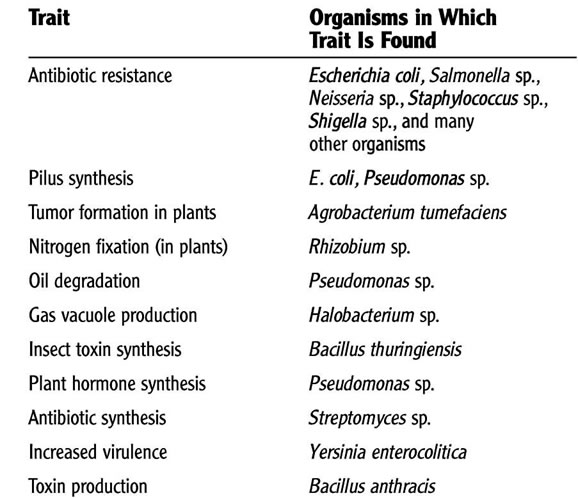

AMBE 101 :: Lecture 13 :: GENETIC ENGINEERING - PLASMIDS, EPISOMES

DNA is the blueprint for the individuality of an organism. The organism relies upon the information stored in its DNA for the management of every biochemical process. The life, growth and unique features of the organism depend on its DNA. The segments of DNA which have been associated with specific features or functions of an organism are called genes.
Molecular biologists have discovered many enzymes which change the structure of DNA in living organisms. Some of these enzymes can cut and join strands of DNA. Using such enzymes, scientists learned to cut specific genes from DNA and to build customized DNA using these genes. They also learned about vectors, strands of DNA such as viruses, which can infect a cell and insert themselves into its DNA.
With this knowledge, scientists started to build vectors which incorporated genes of their choosing and used the new vectors to insert these genes into the DNA of living organisms. Genetic engineers believe they can improve the foods we eat by doing this. For example, tomatoes are sensitive to frost. This shortens their growing season. Fish, on the other hand, survive in very cold water. Scientists identified a particular gene which enables a flounder to resist cold and used the technology of genetic engineering to insert this 'anti-freeze' gene into a tomato. This makes it possible to extend the growing season of the tomato.
Plasmids: A plasmid is an extra chromosomal DNA molecule separate from the chromosomal DNA which is capable of replicating independently from the chromosomal DNA. In many cases, it is circular and double-stranded. Plasmids usually occur naturally in bacteria, but are sometimes found in eukaryotic organisms (e.g., the 2-micrometre-ring in Saccharomyces cerevisiae).
Plasmid size varies from 1 to over 1,000 kilobase pairs (kbp). The number of identical plasmids within a single cell can range anywhere from one to even thousands under some circumstances. The number of plasmids in a cell generally remains constant from generation to generation.
Properties of Plasmids
• Circular DNA elements, always double-stranded DNA, Supercoiled
• Can occur in as few as 1 copy per cell (single copy plasmids) to as many as several dozen (multicopy plasmids).
• Variable sizes; small plasmids about 0.1% size of host chromosome, large plasmids can be as much as 10% the size of host chromosome. Smaller plasmids have few genes (30 or less). Size ranges from 1000 bp (1 kbp) to 1000 kbp.
• Ubiquitous; almost all cells isolated in nature carry plasmids, often more than one kind. (In E. coli alone, more than 300 different plasmids isolated.)
• Have a replicon (origin for DNA replication), number of copies per cell regulated. Large plasmids typically only 1-5 copies/cell (stringent control); small plasmids ~10-50 copies/cell (relaxed control)
• Many plasmids are incompatible; if one is present, cell cannot support another plasmid of same compatibility group.
• Not essential to cell under all circumstances; can be "cured" by agents that impair DNA replication ----> cured cell lacking plasmid. Can be spontaneously lost over time unless some selection makes plasmid valuable to cell.
• Extend range of environments in which a cell can live (e.g., by degrading antibiotics, or providing enzymes for digestion of novel catabolites).
Examples of Plasmid genes
- Antibiotic resistance genes (enzymes that modify or degrade antibiotics) -- plasmids with these genes are called R factors
- Heavy metal resistance (enzymes that detoxify metals by redox reactions)
- Growth on unusual substrates (enzymes for hydrocarbon degradation, etc.)
- Restriction/modification enzymes (protect DNA, degrade unprotected DNA)
- Bacteriocins (proteins toxic to other bacteria lacking the same plasmid)
- Toxins (proteins toxic to other organisms; e.g. humans) -- called virulence plasmids.
Some Examples:
- Staph aureus virulence factors: coagulase, hemolysin, enterotoxin, others
- pathogenic E. coli strains: hemolysin, enterotoxin
Proteins that mediate plasmid transfer to uninfected strains
There are two categories of plasmids. Stringent plasmids replicate only when the chromosome replicates. This is good if you are working with a protein that is lethal to the cell. Relaxed plasmids replicate on their own. This gives you a higher ratio of plasmids to chromosome. Some of the traits coded by plasmids include:

Classification of Plasmids
1. Transfer properties -
a. Conjugative plasmids - Conjugative plasmids are those that mediated conjugation. These plasmids are usually large and have all the genes necessary for autonomous replication and for transfer of DNA to a recipient (e.g. genes for sex pilus).
b. Nonconjugative plasmids - Nonconjugative plasmids are those that cannot mediate conjugation. They are usually smaller than conjugative plasmids and they lack one or more of the genes needed for transfer of DNA. A nonconjugative plasmid can be transferred by conjugation if the cell also harbors a conjugative plasmid.
2. Phenotypic effects -
a. Fertility plasmid (F factor)
b. Bacteriocinogenic plasmids - These plasmids have genes which code for substances that kill other bacteria. These substances are called bacteriocins or colicins.
c. Resistance plasmids 7 factors) - These plasmids carry antibiotic resistance genes.i) Origin - The origin of the R factors is not known. It is likely that they evolved for other purposes and the advent of the antibiotic age provided a selective advantage for their wide-spread dissemination.
ii) Structure - R plasmids are conjugative plasmids in which the genes for replication and transfer are located on one part of the R factor and the resistance genes are located on another part as illustrated in Figure.
RTF (Resistance Transfer Factor) - carries the transfer genes.
R determinant - carries the resistance genes. The resistance genes are often parts of transposons.
Mode of action of resistance genes -
a) Modification (detoxification) of antibiotic - e.g. β-lactamase
b) Alteration of target site - e.g. Streptomycin resistance
c) Alteration of uptake - Tetracycline resistance
d) Replacement of sensitive pathway - e.g. new folic acid pathway for resistance to sulfa drugs.
Plasmids are easy to manipulate and isolate using bacteria. They can be integrated into mammalian genomes, thereby conferring to mammalian cells whatever genetic functionality they carry. Thus, this gives you the ability to introduce genes into a given organism by using bacteria to amplify the hybrid genes that are created in vitro. This tiny but mighty plasmid molecule is the basis of recombinant DNA technology.
Episome: Episome is a unit of genetic material composed of a series of genes that sometimes has an independent existence in a host cell and at other times is integrated into a chromosome of the cell, replicating itself along with the chromosome. Episomes have been studied in bacteria. One group of episomes are actually viruses that infect bacteria. As autonomous units they destroy host cells, and as segments integrated into a chromosome they multiply in cell division and are transferred to daughter cells. Episomes called sex factors determine whether chromosome material will be transferred from one bacterium to another. Other episomes carry genes that make bacteria resistant to the inhibitory action of antibiotics.
Transposons : Are sequences of DNA that can move or transpose themselves to new positions within the genome of a single cell. The mechanism of transposition can be either "copy and paste" or "cut and paste". Transposition can create phenotypically significant mutations and alter the cell's genome size. Barbara McClintock's discovery of these jumping genes early in her career earned her a Nobel prize in 1983. Transposons make up a large fraction of the C-value of eukaryotic cells. Transposons are often considered "junk DNA". In Oxytricha, which has a unique genetic system, they play a critical role its development. Transposons are very useful to researchers as a means to alter DNA inside a living organism.
| Download this lecture as PDF here |